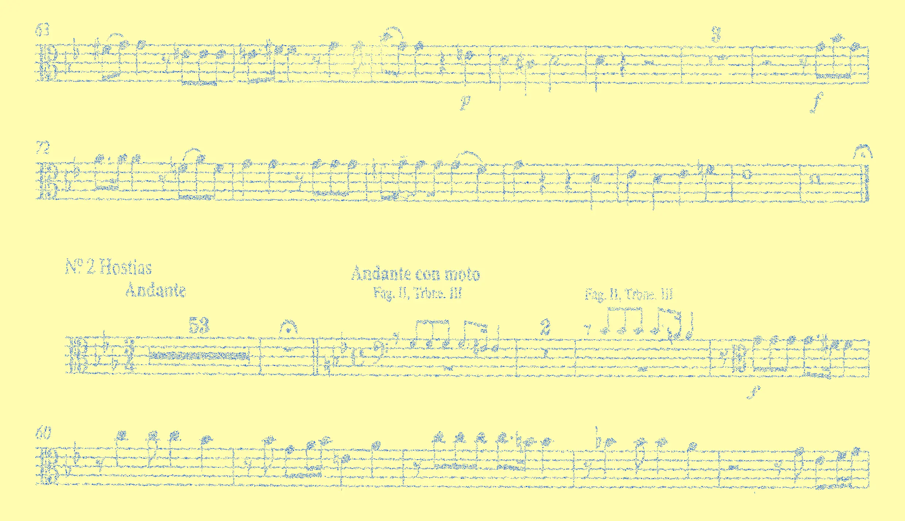
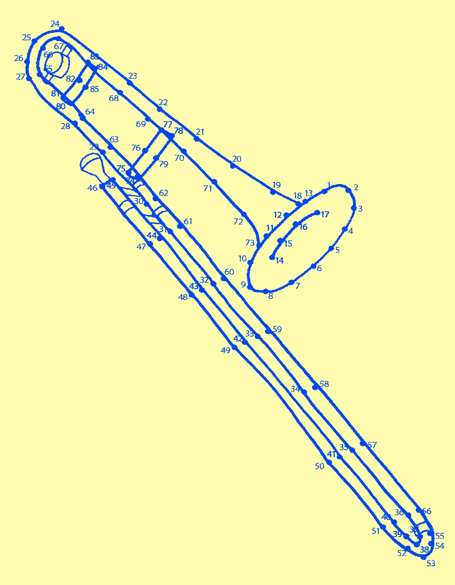
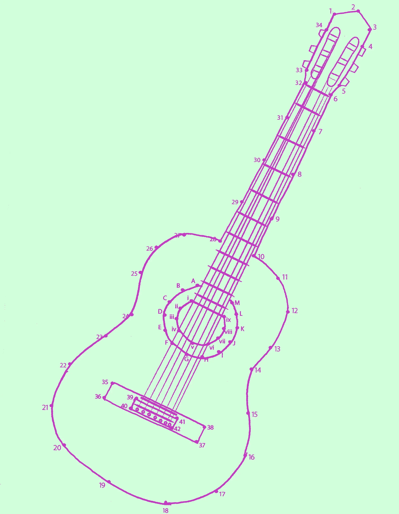
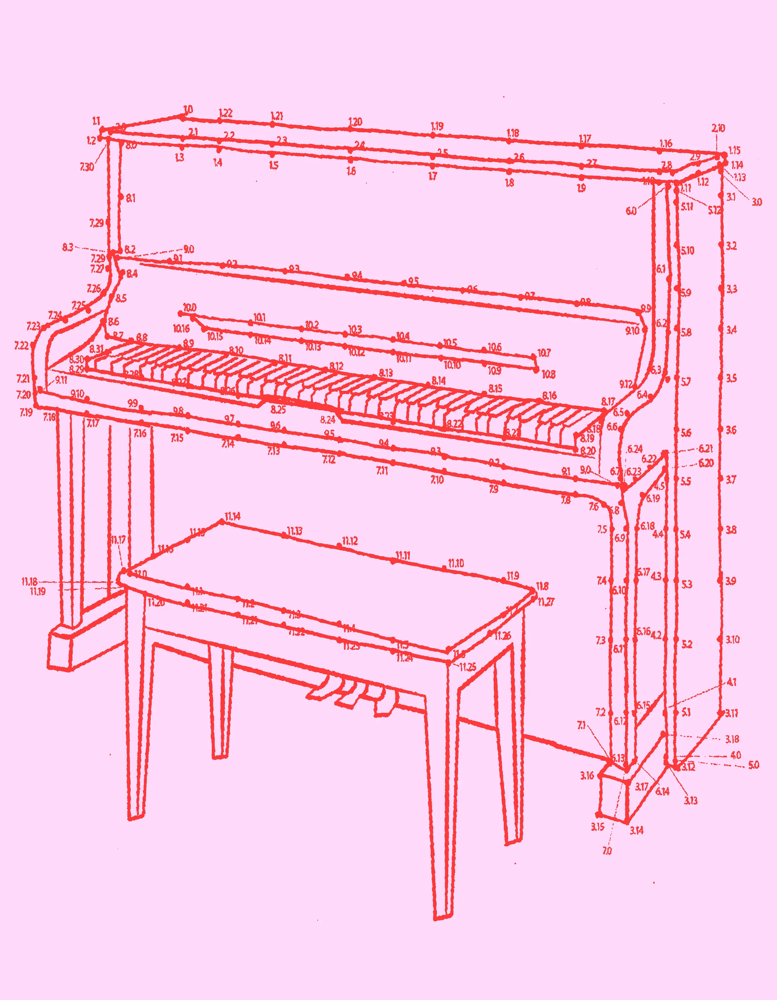
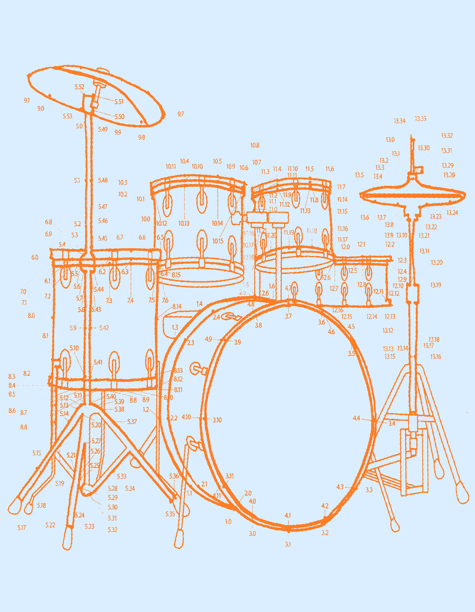
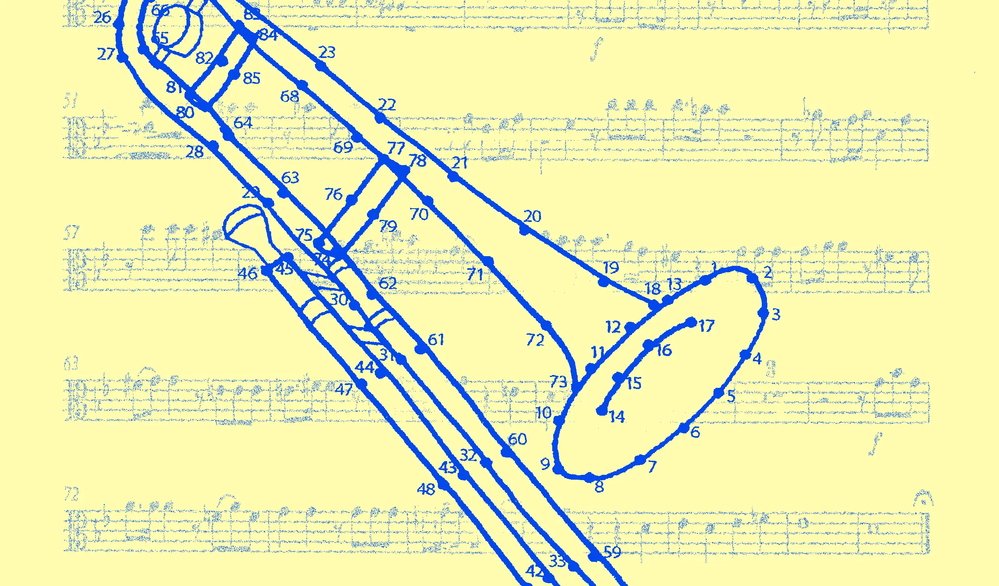
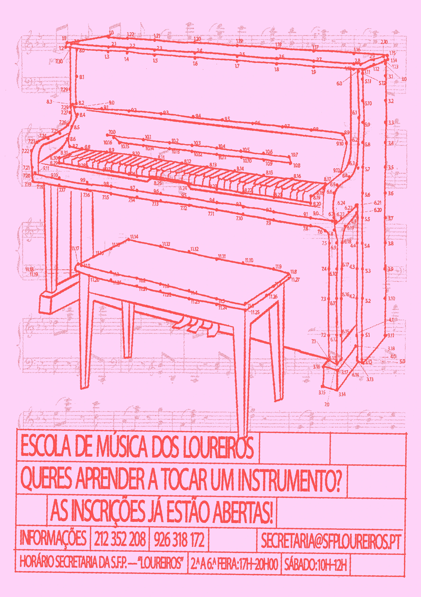
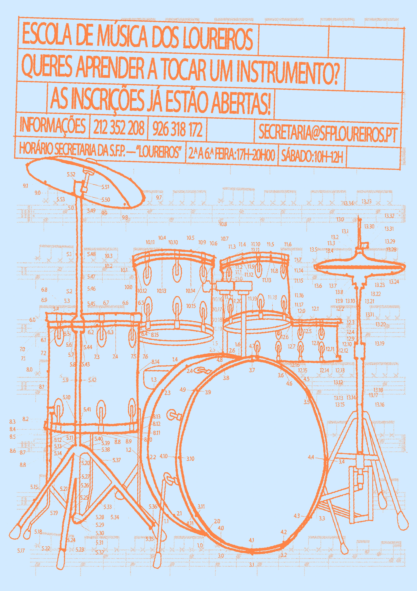
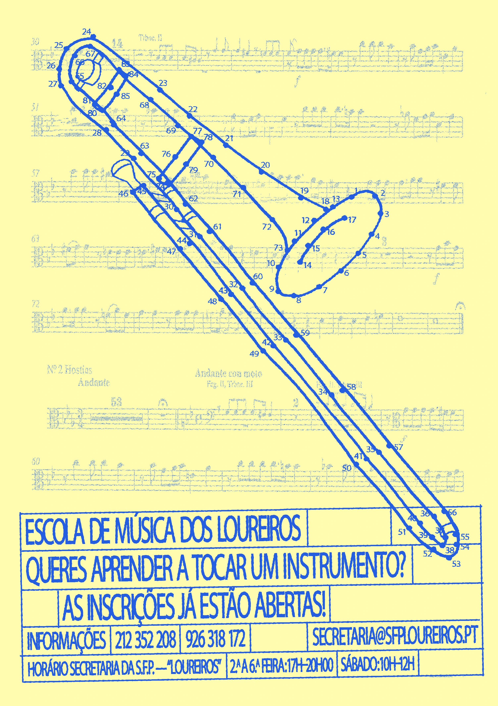
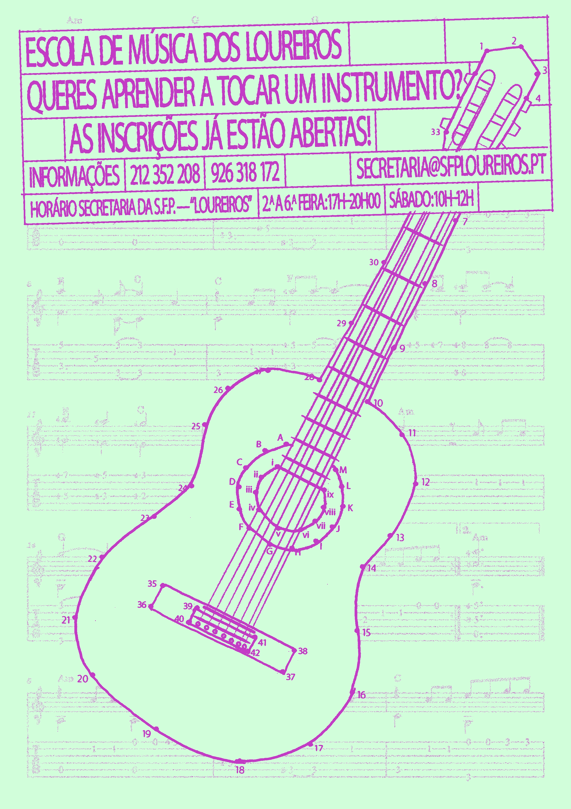

Music has always been a part of my life since I was 9 or 10 years old. I began to have music lessons when I started elementary school, and at the end of my fourth grade, I began to attend a music school in my hometown, Palmela. I learned how to play the transverse flute, had music theory lessons, choir lessons, and I was in a few bands at the music school until I was 15.
Escola de Música dos Loureiros belongs to Sociedade Filarmónica Palmelense, one of the most important philharmonic associations in Palmela. As such, in 2021, I was invited to create some communication materials for this music school.
The ones I've made for the 2025/2026 scholar year are my favorites so far. Basically, I chose four instruments that are taught at the music school: trombone, guitar, piano and drums. Since it's a school where mostly children and teenagers go, I decided to create four illustrations of these instruments based on the idea of drawings that are formed by connecting dots.




After that, I thought it would also be cool to include music scores corresponding to each musical instrument I chose to each poster—this is because not all instruments read the same musical clef.

Since practically all the rhythmic figures found in the musical scores are composed of sticks and small dots, I thought it made sense to try to incorporate the dots from the illustrations that I created into the musical scores, almost as if these dots were also rhythmic figures.




1. Art direction, design and illustrations
Duarte da Costa.